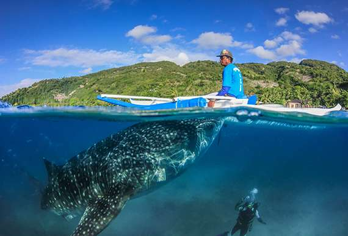
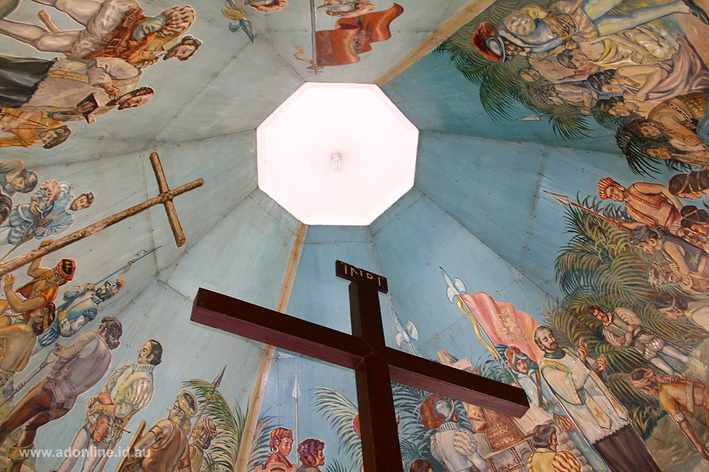
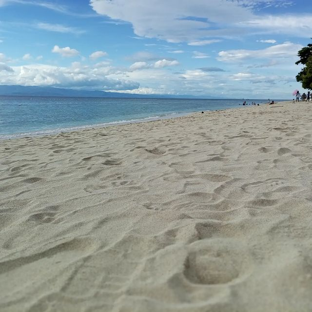

Visit Cebu
Visit Cebu, a vibrant island known for its rich history, stunning beaches, and diverse attractions. Cebu City, the heart of the province, is home to historical landmarks such as Magellan's Cross and the Basilica Minore del Santo Niño. For those seeking adventure, Oslob offers the chance to swim with whale sharks in crystal-clear waters. You can also visit Kawasan Falls in Badian, where you can experience canyoneering and enjoy the refreshing turquoise waters. Relax on the beautiful white sand beaches of Mactan Island or go island-hopping to nearby islands like Malapascua and Bantayan. Cebu is a food lover's paradise, with specialties like lechon (roast pig) and seafood dishes that you won’t want to miss. The island also boasts vibrant festivals, such as the Sinulog Festival, which celebrates Cebu’s culture and history. Whether you're interested in exploring its historical sites or enjoying its natural beauty, Cebu offers something for everyone. Hiking to the top of Osmeña Peak provides a panoramic view of the island’s landscapes. Visit Cebu for a perfect blend of history, adventure, and relaxation!
Must-See in Cebu
- Kawasan Falls
- Oslob Whale Shark Diving 
- Magellan's Cross 
- Moalboal Beach 

Best Time to Visit
The best time to visit the Philippines is during the dry season, which runs from December to May. This period offers sunny weather and clear skies, making it ideal for outdoor activities like island-hopping and beach lounging. The months of December to February are especially popular, as the temperatures are cooler and more comfortable for exploring. March to May is perfect for those who love hot weather, with clear waters for diving and snorkeling. However, it’s also the peak tourist season, so expect more crowds in popular destinations like Boracay and Palawan. For a quieter experience, visiting during the shoulder months of November or June can offer fewer tourists while still enjoying pleasant weather. The rainy season, from June to October, brings occasional storms, especially in the western and eastern parts of the country. While the rain may deter some travelers, it’s also the best time for lush green landscapes and lower prices on accommodation and tours. If you're planning to attend festivals, visiting during January for the Sinulog Festival in Cebu or the Ati-Atihan Festival in Kalibo is a great choice. Ultimately, the best time to visit depends on your preferences, whether you want sunny weather, fewer crowds, or vibrant festivals.